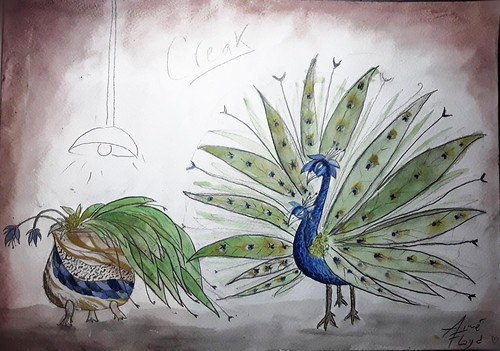

Digital Divination grows out of the fourth project, the old Phantopteryx Toolbox. Instead of keeping the earlier toolbox as a loose collection of utilities, this new version rebuilds the idea into a more complete desktop-style image workspace.
The main application is an image editor with five library slots, non-destructive operation stacks, live preview, edit history, metadata panels, format/export views, and a professional adjustment area inspired by Lightroom-style workflows. The interface supports quick edits, pro controls, curves, local brush masks, preset import, and optional AI actions such as enhance, expand, background removal, and object removal.
The project was prepared for Firebase Hosting, so the build logic centers on a deployed single-page app rather than a local sketch link. For this portfolio page, I am showing the structure and process, with the live project available below.

From Old Tool to New Workspace
Project IV explored the toolbox concept. Project V keeps that origin, then rebuilds the system around one stronger purpose: editing, organizing, and exporting images in the browser.
Editing Logic
Images move through import, slot storage, operation stacks, preview rendering, history, metadata, and export. The edits are stored as instructions, so the source image can stay intact while the preview updates.
Optional AI Layer
AI tools are treated as optional services. The frontend can call a local FastAPI server for long tasks, while the Firebase-facing interface remains focused on the browser editing experience.